Eye-Tracking Robotic Arm
University of Leicester - Bioengineering Group
- James Reuss
- Will Scott-Jackson
- Amy Lymn
- Joe Ahuja
- Ian Chapple
Contents
Introduction
Amy Lymn
- 62,000 people living in the UK have an amputated limb
- Every year 1,200 people become paralysed in the UK
Project Aims
- Design and build a robotic arm
- Build an eye tracker for use in controlling the arm
- Design and implement a control system that uses an Xbox Kinect and the eye-tracker to allow accurate control in moving objects to the users desired location
Mechanical Systems Design
Amy Lymn & Joe Ahuja
Mechanical Systems
- Rotational? Translational?
- Length?
- Load?
Concept Ideas
- Produce several concepts
- Assess each for feasibility
- Discount concepts that fall short
- Move one concept forward to be developed
Concept 1
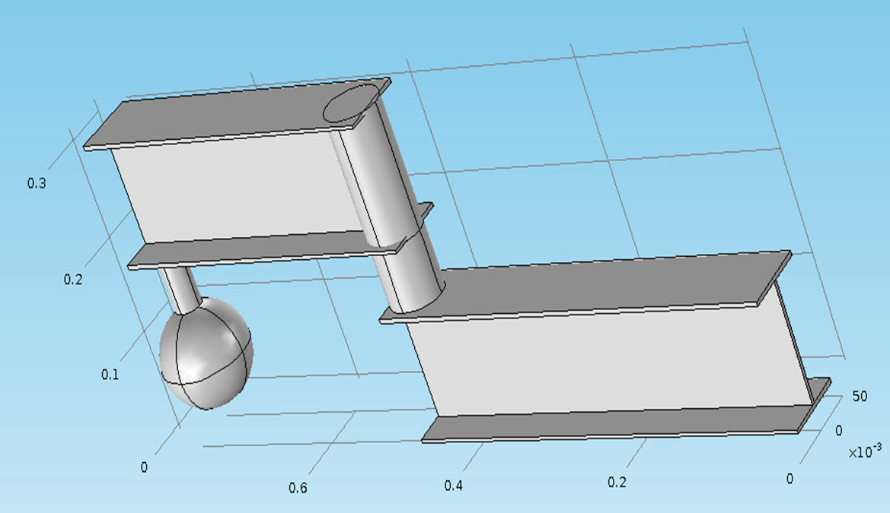Concept 2
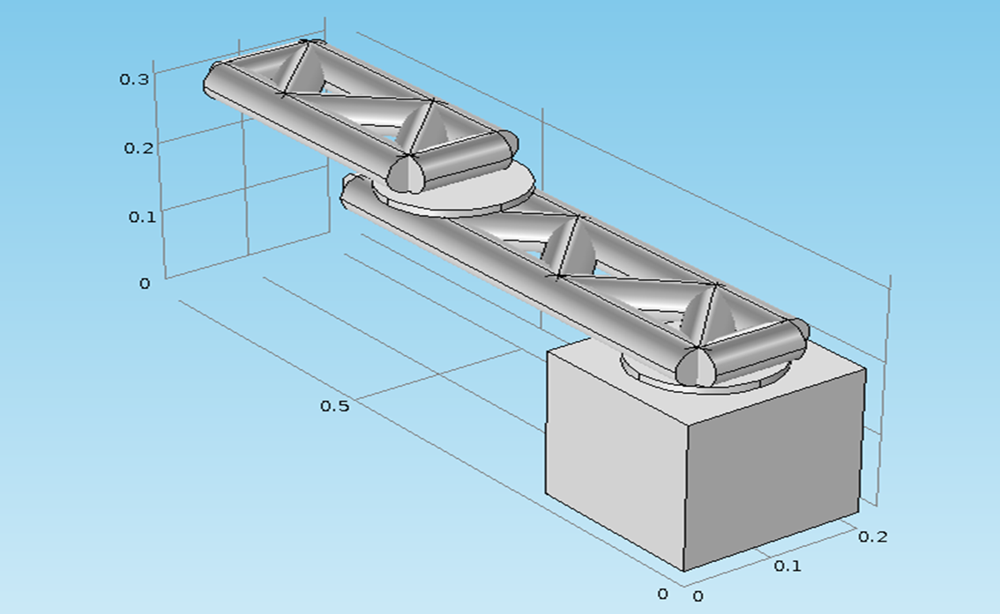Concept 3
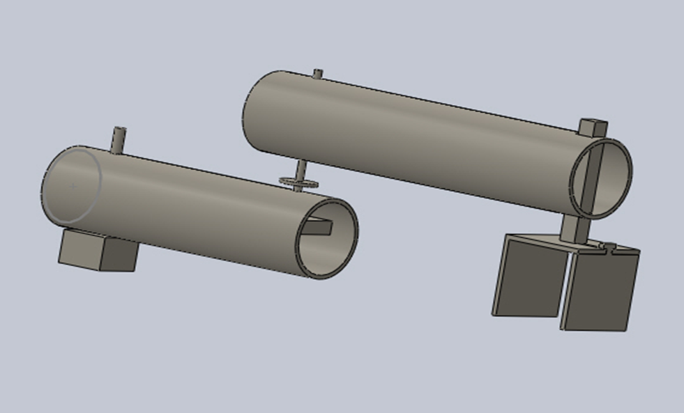Grip Concepts
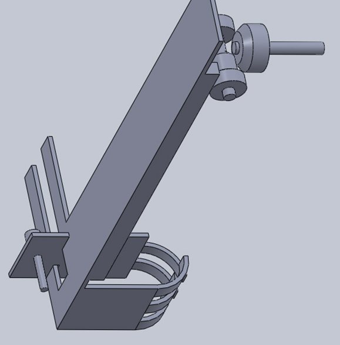 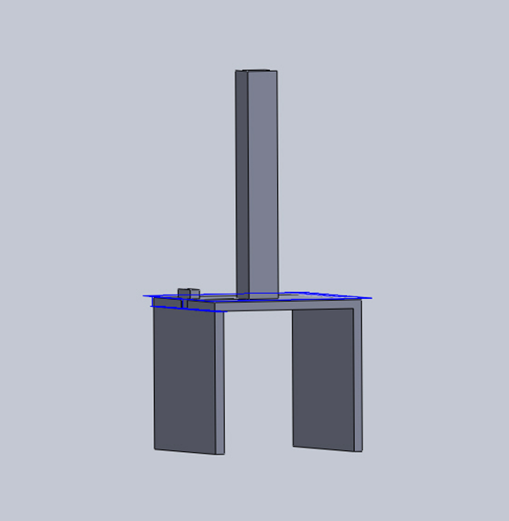Development of Chosen Concept
- Develop concept with further design
- Manufacturing methods taken into account
- Expand design to include finer details
- Consider integration of drivers
- Consider linkages, fasteners etc
- Consider material limitations
Detailed Mechanical Design
- Bring together material selection and developed concept
- All aspects of arm designed for manufacture
- Design simulated to provide accurate data
- Re-examine loads and stresses
- Consult workshop on ease of manufacture/cost

Full Technical Drawings
- Detailed design reproduced in technical drawings
- Drawings meticulously produced and checked
- All parts drawn individually
- All tolerances and materials added
- Submitted to workshop early December
Monitor Manufacture Process
- Make regular checks on manufacturing progress
- Deliver all ordered parts as they arrive
- Clarify drawings if needed
- Make suggestions/approve suggestions
Integration
- Work with other sub-teams on integration
- Provide them with needed data/dimensions
- Advise them on integration methods post manufacture
Testing
- Test arm as it is being manufactured
- Make any necessary changes from testing
- Industrial showcase provided good opportunity for demonstration
- Work closely with electrical sub-team to test and improve movement of arm
Limiting Factors
- Cost was a large limiting factor
- Rate of Manufacture limited full execution
Improvements
- More Degrees of freedom - versatility
- Re-design driver linkages - performance
- Better material quality - performance/versatility
- Better management of manufacture of design
Conclusions
- Cost effective, functional mechanical system has been designed
- System meets requirements
- System meets budget
- Designed within timescale
- Not fully manufactured within timescale
- Provides solution to original problem-proof of concept
- It is hoped this work can be taken on and improved in future
- Improvement and implementation could improve quality of life for users
Electronic Control System
By Will Scott-Jackson
Design Rationale
- To develop a proof of concept control system and driver systems that can interface with the Eye-Tracker and Object Detection
- To develop it so that it can operate as a standalone unit
- To develop the system using readily available, open source hardware and software
Breakdown of Sub-Systems
- Controller
- Power Supply
- Actuators and Drivers
- Feedback Control
- User Interface
Controller
A controller was required to implement the logic of the control system, it must:
- Be suitable for rapid prototyping of proof of concept software
- Be open source
- Have built in features such as analogue to digital converters and serial interfaces
- Be readily available at a reasonable price
Having considered the options, an Arduino Mega 2560 was selected:
This was selected because:
- It has many digital I/O pins
- 16 Analogue to Digital Converter pins
- USB port can interface with PC via serial link
- 16MHz of processing power
- Can be programmed with an Open Source IDE
Actuator Systems
Four electrical motors were required to drive the four degrees of freedom. There were several factors that needed to be considered:
- The various torque requirements/electrical power requirements
- Connecting to the driving mechanisms
- Controlling them with software/electronics
Actuator Systems (Research)
- Servo Motors
- Very high performance
- Built in feedback for control purposes
- Very expensive
- Difficult to implement in time given
- Stepper Motors
- Less expensive than servo motors
- Open loop control
- Easy to implement in both hardware and software
Actuator Systems (Research cont.)
- Iron Core DC Motors
- Very Cheap
- Very easy to implement
- No built in means of control however
Actuator Systems (Selections)
Based on the aforementioned research, several electrical motors were selected:
One Trinamic QSH-5718-51-28-101
One Astrosyn - MY3002 Size 11 Stepper Motor
Two RE 385 DC Motors
Actuator Systems Circuitry Development
In order to actuate these motors, specific driver circuity was required, although there were some factors to take into consideration:
- Electrical power requirements of the motors
- The stepper motor coil configurations
- Controlling the motors with software
- Standardising and Implementing on a PCB
Feedback Systems
- Feedback control was required to improve overall system robustness
- Hall Effect Sensors used to provide positional information to the controller
- Sensor signals are compared with the input signals in order to make corrections
Feedback Systems (Implementation)
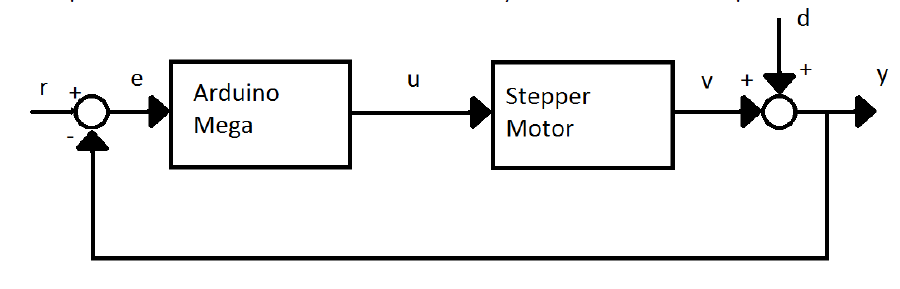The feedback system corrects errors caused by disturbances caused by motor slip etc.
User Interface
In order to develop this system into a standalone unit, several major components were required:
- User inputs
- Buttons and switches
- Variable Inputs
- User feedback
- LEDs
- Liquid Crystal Display
Progress to Date
- Implemented initial prototypes of the aforementioned sub-systems but without extensive testing in-place
- Interface to Eye-Tracker/Object Detection hasn't been implemented
Problems and Limitations
- Stepper motors require gearing
- Resolution of feedback system is low
- Feedback system implemented for shoulder motor only
- Doesn't behave as a hard real time system
Further Improvements
- Unified Power Supply
- Replace stepper motors with servo motors
- High resolution Rotary encoders for feedback
- Improvements to software using TTC or Pre-emptive scheduling systems (i.e. real time)
- Implementation using real time microcontrollers
- Implementation of a Controller Area Network
- Alternative manual control schemes
Electronic Control System
Live Demo
Control Systems
Eye-Tracker
By Ian Chapple
Hardware
- Build a cheap eye tracker
- Normally cost >£10,000
- Built for ~£70 using:
- Playstation Eye Camera
- Infra Red LED's
Software
Image Processing:
- Locate Eye/Pupil
- Locate glint from light source
Data Mapping:
- Map Data
- Find Coordinate from map and Eye/Glint locations
Contour Finding
Find the edges of objects in an image

Circle Finding
Locate circular objects from within an image
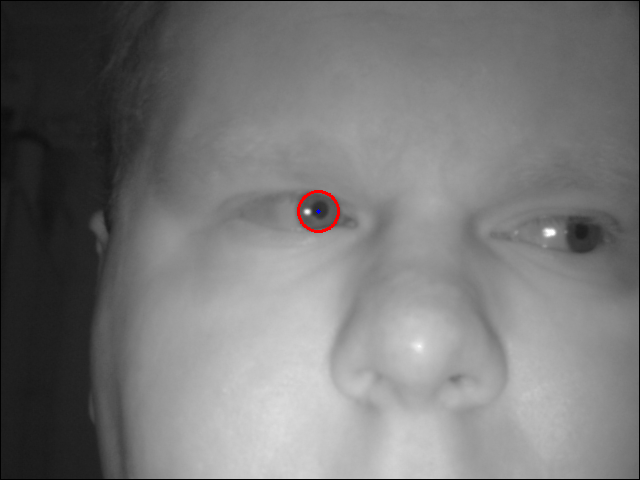Glint Finding
Find brightest point in image
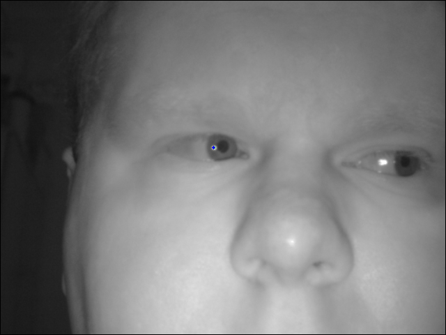Data Mapping
Linear 3D map:
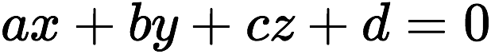Use 2 sets of equations to locate coorinates (x,y):
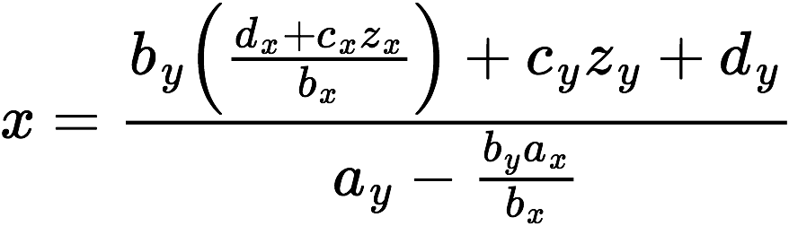 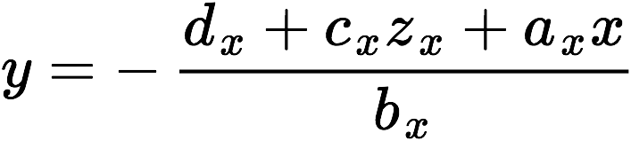Eye-Tracking
Video
Control
Object Detection
By James Reuss
Why is Object Detection Needed?
Because it is unable to detect its environment!
How can this help the system?
- Determine if the user is looking at an object
- Determine alternate routes to avoid objects
- Aid in self calibration of arm position

{kind=link}
{kind=link}
{kind=link}
What's the Problem?
All of these systems are expensive!
The Kinect
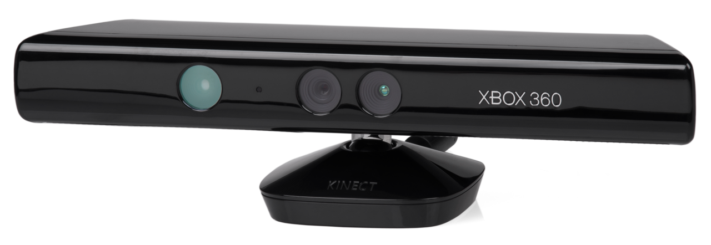- Released in 2010 by Microsoft
- Costing around £100
How does the Kinect work?
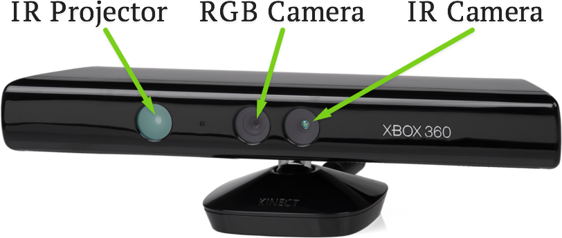Pixel Organisation
- 0
- 1
- 2
- 3
- 4
- 5
- 6
- 7
- 8
- 9
- 10
- 11
- 12
- 13
- 14
- 15
- 16
- 17
- 18
- 19
- 20
- 21
- 22
- 23
- 24
RGB and Depth Images - Depth in millimetres
Point Clouds
- The depth data can be manipulated to determine each point's 3D coordinate
- This forms a Point Cloud
The Algorithms
Need to convert the raw data into a usable form.
Then it is posible to detect the objects.
This requires the use of the following operations:
- Surface Normals
- Plane Segmentation
- Point Clustering
- Cluster Filtering
- Dominant Plane Detection
- RANSAC
- Convex Hull
- Point Inclusion
- Object Cloud Clustering - K-Means
Surface Normals
Calculate the surface normal of each 3D point
using neighbouring points.